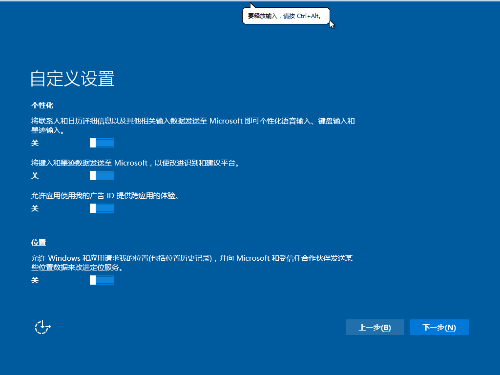

Windows 10 Enterprise LTSB(Windows 10 企业版长期服务方案)，只有安全更新，没有功能更新，不含Windows Store、Microsoft Edge、Cortana等Universal Windows Platform(UWP) 应用，与Windows 7最为相似。


以上为虚拟机安装Windows 10 Enterprise LTSB 2015的截图，Windows 10 Enterprise LTSB 2016的截图可参考
http://wzascok.livejournal.com/59908.html